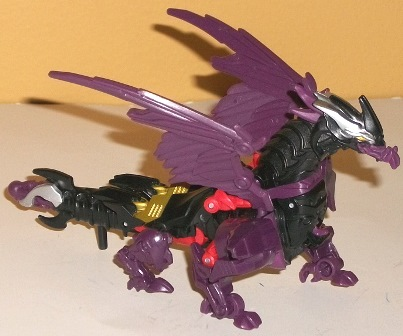

Optimus
Prime vs. Predaking set (Predacons Rising) [Target Exclusive]
Optimus
Prime vs. Predaking set (Predacons Rising) [Target Exclusive]
Set Price
: $15 U.S.
Overall Rating
: 7.6
(NOTE: Because this set is composed of repaints,
this is not a full-blown review. This mainly covers any changes made to
the set and the color scheme, and merely compares it to the original versions
of these molds. For a review on the original Beast Hunters commander class
Optimus Prime toy, go
here
. For a review
on the original Beast Hunters commander class Predaking toy, go
here
.)
Optimus
Prime
Allegiance
: Autobot
Size
: Commander
Difficulty of Transformation
: Easy
Color Scheme
: Dull brick red, light
dull milky grayish blue, dark blue, greenish black, light milky gray, and
some silver, teal, light metallic silvery blue, red, light sky blue, and
light metallic bronze
Individual Rating
: 7.7
Optimus Prime's color
scheme this time is actually an homage to
Thunderclash
,
a primarily European-market toy from the tail end of G1/early G2. Except
for the blah light milky gray segments for the front grill, upper legs,
weapons, and a few other minor parts, this color scheme is completely different
from Optimus' classic scheme-- a rarity in this day and age. The combination
of dull pale grayish blue and dark blue on the front section of the truck/top
section of the robot looks great, with both colors contrasting and complementing
each other at the same time. Meanwhile, the back end of the truck/lower
robot legs is a dull brick red, which serves as a nice "warm" color to
go against Optimus' otherwise "cool" colors. All three of these plastic
shades are rather nice-looking, non-primary colors that you don't see that
often, and aren't at all loud AND have quite a bit of originality. There's
also quite a few paint apps-- most of the dark blue is paint, but there's
also some nice silver on Prime's smokestacks and the "bars" that form the
top of the back end of the truck mode, which always serves as a nice accent
color on TFs. There's also some light silvery blue paint on the wheel hubs
to color up that black a little bit (which is oddly a bit of a greenish
shade-- not sure I'm fond of that, but it's only on a few pieces). My favorite
paint apps, though, have to be the ones on the front of the chest-- the
red windows contrast extremely well with the dull grayish blue, and the
dark blue outline around the front windows looks REALLY awesome. The teal
used for parts of the waist, the headlights, and a Thunderclash-like Autobot-eagle
symbol on the top of the chest also look fantastic and contrast against
the duller shades of blue very nicely. In keeping with Thunderclash's scheme,
Optimus also has a little bit of bronze on his robot face and lower arms.
All in all, it all comes together marvelously without looking too busy.
No mold changes have
been made to this version of Optimus Prime.
Optimus Prime Tech Specs:
Strength: 10.0
Intelligence: 8.0
Speed: 7.0
Endurance: 10.0
Rank: 10.0
Courage: 10.0
Fireblast: 9.0
Skill: 8.0
Predaking

Allegiance
: Predacon
Size
: Commander
Difficulty of Transformation
: Easy
Color Scheme
: Black, dark dull purple,
light reddish orange, and some silver and metallic gold
Individual Rating
: 7.4
Predaking isn't as much
of a redeco as Optimus Prime is-- this version's black plastic is in the
same areas as on the original release of this mold, as is the silver paint
on the dragon and robot heads and the tail weapon. The main differences
here are that the original's orange has been replaced with a dark, dull
purple, while the original's light gray has been replaced with a somewhat
bright reddish orange. The purple and reddish orange go extremely well
together, and the latter is used just enough to serve as a great accent
color without being so prevalent as to look obnoxious. The reddish orange
also goes nicely with the black. The purple doesn't provide the contrast
against the black that the original's orange did, however, and thus doesn't
provide the visual "pop" in beast mode that the original had, though in
robot mode Predaking looks considerably better with the purple less prevalent
and the red-orange more so. Most of the yellow paint on the original has
been replaced with a really nice shade of gold, which is also used with
some silver paint to great effect on Predaking's robot waist. All this
said, this mold still desperately needs some paint on its wings, and it
doesn't look like it's going to get it, unfortunately. One of the more
popular theories on what this scheme is homaging is the
2001
"Robots in Disguise" Megatron
, but I find that a bit far-fetched. I
think it's just a recolor without homaging anything in particular.
No mold changes have
been made to this version of Predaking.
Predaking Tech Specs:
Strength: 10.0
Intelligence: 8.0
Speed: 9.0
Endurance: 10.0
Rank: 10.0
Courage: 10.0
Fireblast: 10.0
Skill: 6.0
This "Predacons Rising"
Commander class 2-pack is a mild recommendation if you don't have either
of these molds (or even if you already have a version of the commander
Beast Hunters Optimus mold) and don't care about show-accurate colors.
Neither mold is particularly outstanding, but both color schemes are quite
original. Optimus' Thunderclash-homage color scheme looks extremely good,
with the colors complementing and contrasting against each other extremely
well, and he's got lots of paint apps too-- this is my favorite release
of this mold, no question. I don't think Predaking's colors this time around
QUITE measures up to his original color scheme, but it's darned close and
still largely good.
Optimus Prime vs. Predaking Bio:
Two ultimate warriors face off for the
final battle in a conflict millions of years in the making!
Reviews by Beastbot
Back to Transformers:
Prime Index